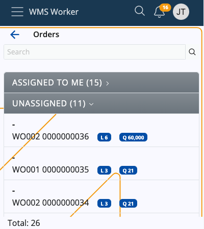
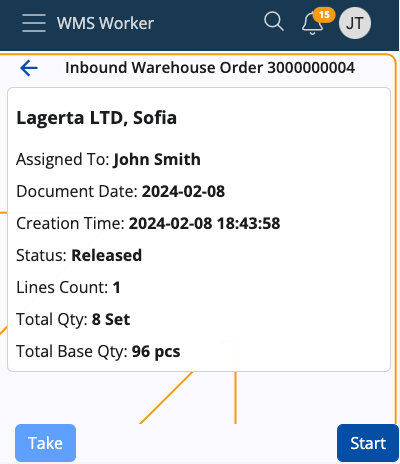
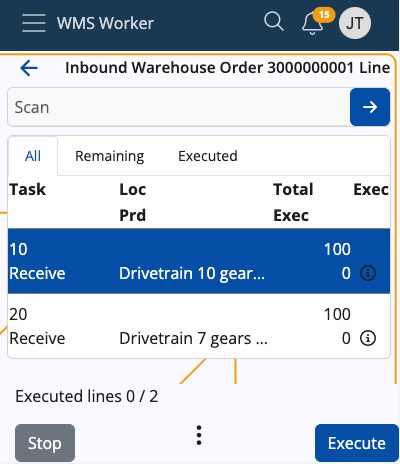

Orders
This menu provides information on upcoming warehouse orders.

The order navigator is divided into two categories:
- ASSIGNED TO ME - the warehouse worker who is logged into their own account can check the orders they have for execution
- UNASSIGNED - orders that are not assigned to a specific worker and can be executed by anyone who can take them
Above the list, there is a search bar that can be used to filter orders. You can search by scanning or entering an order number, a party name (if any), or a document type.
The total number of orders can be checked at the bottom of the page.
Order details
Click on an order to see more information about it.

The details on the screen include:
- Assigned To - the employee who has to execute the order
- Document Date - the date of the order
- Creation Time - the time and date of creation of the order
- Status - the status of the order
- Lines Count - the rows number in the order table
- Total Qty - the sum of product quantities; if there are lines in different measurement units, there will be separate totals for each unit
- Total Base Qty - the overall quantity of individual products, grouped according to the respective measurement unit (e.g. 8 sets total qty equals 96 pcs base qty).
Click Start to open the order.
Order lines
Once an order is started, a summary of its lines will show up:

On this screen, you will find three tabs dedicated to line execution:
- All - shows all lines of the order regardless of whether they have been executed or not
- Remaining - shows rows that have not yet been executed
- Executed - shows the rows that have already been executed
All lines contain information about the requested product and its quantity.
- Task - shows the main task
- Loc - shows the location of the product
- Prd - shows the product itself
- Total/Exec - shows what quantity of the product needs to be procure compared to what quantity has already been executed
- Еxec - a check mark that appears only if the line is fully executed
More details about each line, e.g. the full name of the product, the ordered lot, variant, serial number, etc. can be accessed via the line's respective info button. If an execution has already taken place, the Info screen will include details about it as well.

At the top of the screen, there is a general Scan field.
When scanning a value in this field, a matching unexecuted line is searched through the lines list. If such a line is found, its execution is started automatically.

Note
The scanned value recognition is done by Barcode Parsers such as Product Code and GS1 - Single Product.
The list of currently active parsers can be seen by accessing the vertical three-dot Menu button at the bottom of the app.
At the bottom of the screen, there are buttons for managing the order:
- Stop - terminates the order
- Execute - allows for line execution; will change to Complete Order when all lines have been executed
- Menu - allows access to several additional functions like Suggest Routing